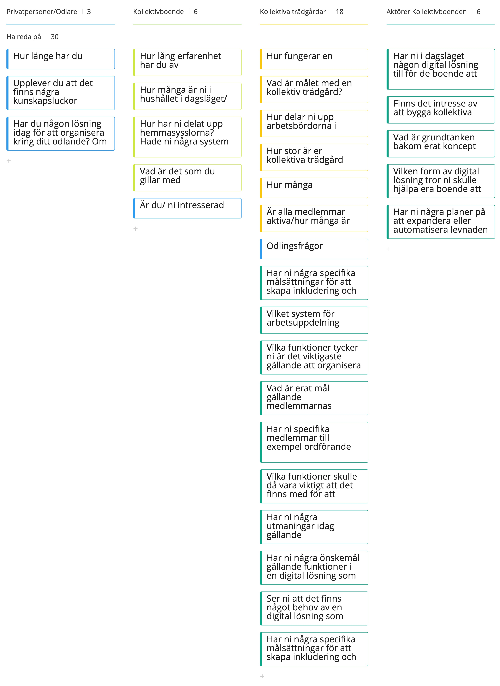
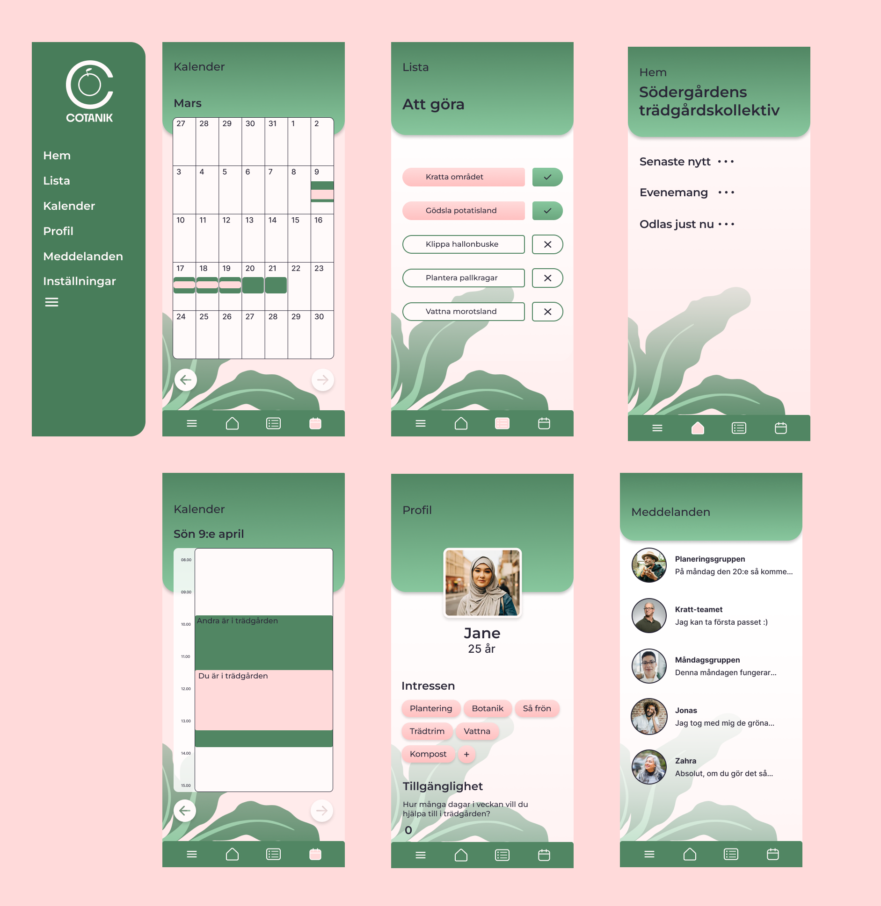
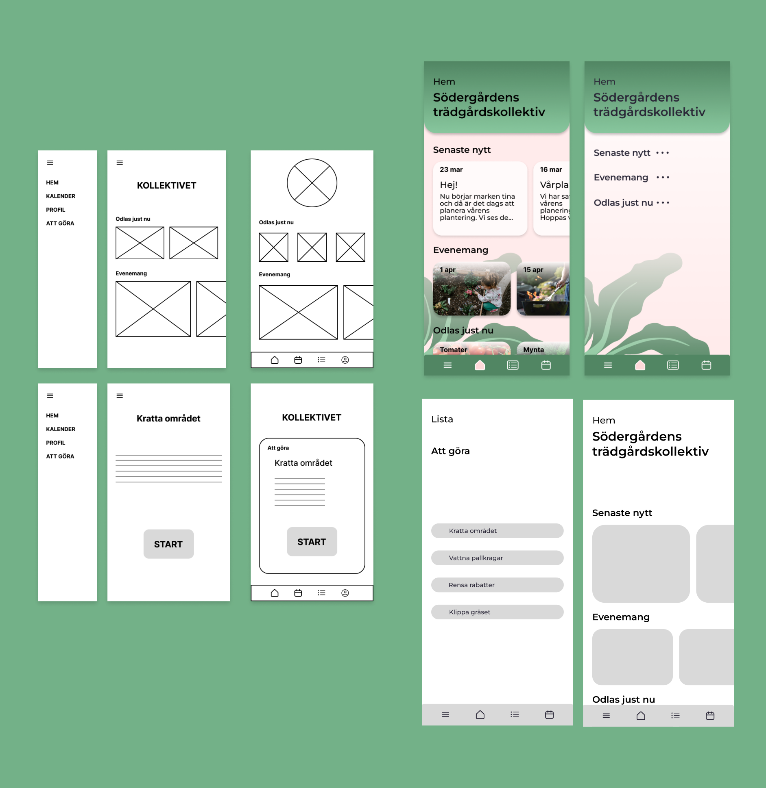

Cotanik was made as a student project at Yrgo University of Applied Sciences in the fall of 2022. The assignment was to develop a service for people who work with biodiversity and I then chose to make
CCotanik - the organizing tool for collective gardens.
The service was designed as a mobile application where members and administrators can easily be assigned tasks in the garden. This is done via an AI that senses entered availability and syncs with the user's schedule.

Research
"Those who engage in horticulture do it to get away from the digital world."
In order to better understand the needs of my users, I started the process of interviewing people who live in collectives as well community garden administrators. After this became one number of focal points clear:
- Simple operation
- Fair division of labor
- Clarity

Prototype
The prototype was created in Figma where all the work was done. The prototype was then presented at the end of the project in early November 2022.

Användartester
Several user tests were carried out during the course of the work which provided insight to improvements. I did tests on the prototype wireframe version, gray box and hi-res version.